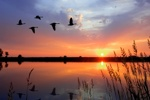
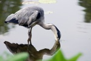
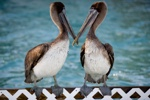
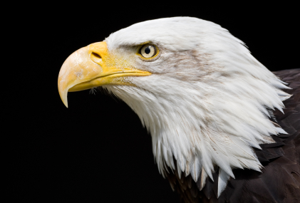

Welcome to Backyard Birds of Utah!
If you love birdwatching like we do, you should enjoy looking around this site.Take a look at our Bird Profiles and take the opportunity to complete our survey.




Bald Eagle
What our Customers have been saying

Wow!!! Who would have thought all these birds live in Utah. I was attracted to the Birds of Utah calendar because of the great horned owl on the cover.I especially like finding and watching raptors such as: hawks, bald and golden eagles, vultures and owls. It is very rare to have some of these big raptors show up in your own yard. .more...